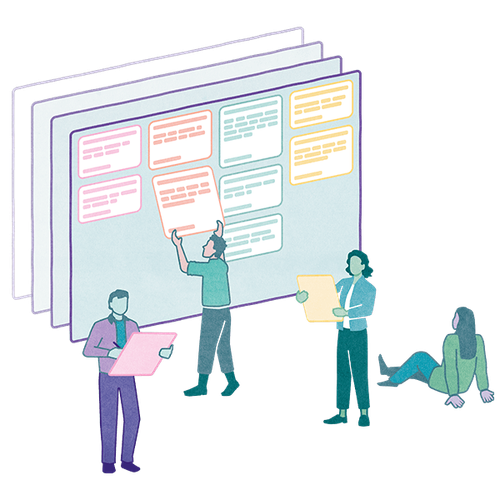

Mit der Academy erhaltet ihr im Business-Plan praxisnahe Lernmodule rund um Facilitation und wirksame Transformation.
Gemeinsam mit 9 Spaces zeigt Plan International Deutschland, wie wertebasiertes Arbeiten Orientierung gibt – nach innen wie nach außen.

Ein Tool, das Teams eine Struktur gibt, um gemeinsam zurückzuschauen und wiederkehrende Prozesse mit jeder Iteration ein bisschen besser zu machen.
Ein kleines Tool hilft, selbst schwierige Fragestellungen zu strukturieren und iterativ zu lösen.
Fokusarbeit ist in Remote-Teams häufig eine einsame Angelegenheit. Wir haben ein Format geschaffen, um gemeinsam alleine Dinge abzuarbeiten.
Ein Tool, das dir dabei hilft, nur noch in nützlichen Meetings zu sitzen